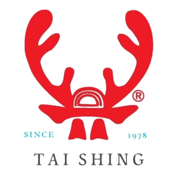

<header class="site-header" role="banner" style="background:transparent;">
  <div class="container" style="display:flex;align-items:center;justify-content:space-between;padding:12px 20px;">
    <div class="brand" style="display:flex;align-items:center;gap:12px;">
      
    </div>
    <nav class="site-nav" role="navigation" style="font-weight:600;color:#2b251f;">
      <a href="index.html">首頁</a> |
      <a href="story.html">品牌故事</a> |
      <a href="brand_origin.html">品牌與商標</a> |
      <a href="products.html">產品介紹</a> |
      <a href="contact.html">聯絡我們</a>
    </nav>
  </div>
</header>


<!DOCTYPE html>

<html lang="zh-Hant">
<head><meta charset="utf-8"/><meta content="width=device-width,initial-scale=" name="viewport"/><title>產品介紹｜台興山產</title>
<link href="./max_style.css" rel="stylesheet"/>  <link rel="stylesheet" href="e_pro_style.css">
<link rel='stylesheet' href='assets/css/theme_mint.css'></head>n


<main class="wrap">
<h>產品介紹</h>
<p class="lead">漢方高級養身品牌  精選產品</p>
<section class="grid">
<article class="card">

<h3 style="color:var(--gold)">仙加味龜鹿飲</h3>
<p>古法慢熬，補氣更補元氣。建議每日1～2包，溫飲吸收更佳。</p>
<div><span class="badge">液態保養</span></div>
</article>
<article class="card">

<h3 style="color:var(--gold)">仙加味龜鹿膏</h3>
<p>承襲古法熬製，滋陰補陽、強筋健骨、養血安神。建議每日早晚各一匙。</p>
<div><span class="badge">傳統膏方</span></div>
</article>
<article class="card">

<h3 style="color:var(--gold)">嚴選駝鹿角</h3>
<p>補腎助陽、強健筋骨，為補養基礎原料。</p>
<div><span class="badge">上品原料</span></div>
</article></section>
</main>
<footer></footer>

<footer></footer>
</html>